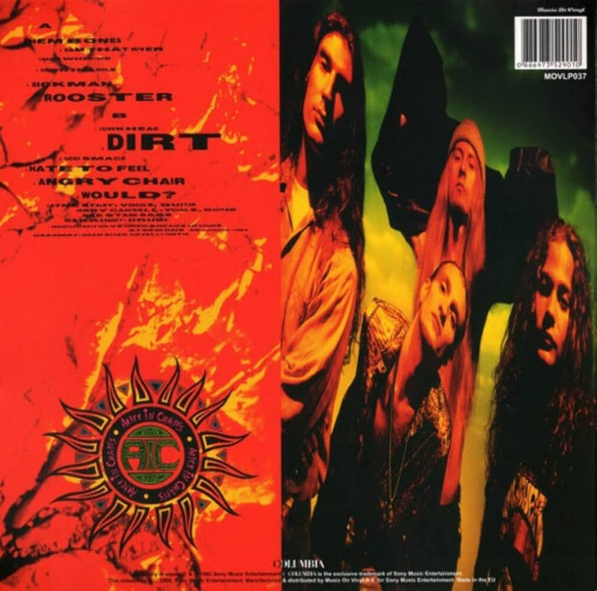

Músicas:
- Them Bones
- Dam That River
- Rain When I Die
- Down in a Hole
- Sickman
- Rooster
- Junkhead
- Dirt
- God Smack
- Hate to Feel
- Angry Chair
- Would?

"Dirt" é o segundo álbum de estúdio do Alice in Chains, lançado em 1992. Sombrio, pesado e emocionalmente intenso, o disco une riffs densos, harmonias vocais marcantes e letras sobre vício, dor e isolamento. Faixas como "Rooster", "Would?" e "Down in a Hole" tornaram o álbum um marco do grunge e do metal alternativo.